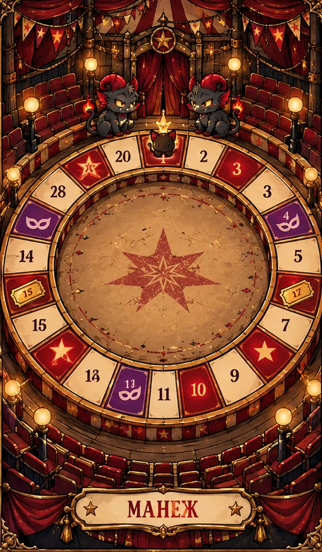

ПОЗИЦИЯ00 / 18
ПРОЙДЕНО ИГР0
ЖЕТОНЫ УДАЧИ0 ✦
СТАТУСОжидание броска
КАРТА ПРЕДСТАВЛЕНИЯ
Манеж испытаний
Игра Аукцион Бонус Выбор

✦ FARS GRAND CIRCUS ✦
ИЗ ЦИРКОВОГО АРХИВА
Твоя карта гастролей
Иллюстрация — часть мира FARS. Ход игры отслеживается по маршруту под ней; оформление не меняет правила.
00 из 18
Представление начинается
✦ FARS GRAND CIRCUS ✦ОЖИДАЕМ ПЕРВОГО БРОСКА
СЛЕДУЮЩИЙ НОМЕР
Манеж ждёт
Брось кубик, чтобы начать представление.
ЗРИТЕЛЬСКАЯ АФИША
Показать прогресс
Зрители смогут следить за игрой по отдельной ссылке. У них не будет кнопок управления, редактора или доступа к твоему кабинету.
ЛЕТОПИСЬ ПРЕДСТАВЛЕНИЯ